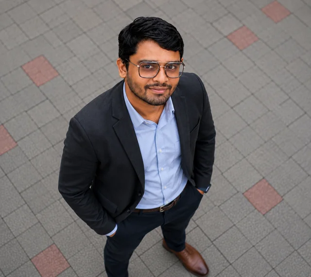

People-first support
Remote troubleshooting and step-by-step guidance that helps users understand what to do next.
Help desk experienceMohamed Rimsan
Practical troubleshooting. Clear communication.
Careful follow-through.
I help users resolve technical issues and get back to work. My remote help desk experience is backed by hands-on application testing, issue investigation and deployment verification.
Let’s talk about your team
A practical approach to the technical issue and the person experiencing it.
Remote troubleshooting and step-by-step guidance that helps users understand what to do next.
Help desk experienceReproduce issues, document the evidence and provide clear context when another team needs to help.
Engineering backgroundWindows, Linux and networking foundations, supported by practical application and API testing exposure.
Tools & proficiencyFeb 2025 – Oct 2026
RemoteTech Bridge Solutions Ltd
User guidance, remote troubleshooting, incident and service-request documentation, escalation and issue follow-through.
Mar – Sep 2026
Intern → TraineeSAĜO MENTE INTERNATIONAL SDN. BHD.
Application issue reproduction, Postman and Swagger API validation, Jira defect tracking and AWS deployment verification.
Listen, clarify symptoms and understand the impact on the user.
Reproduce the problem and work from the available evidence.
Give practical guidance or hand over clear, useful context.
Document the issue, communicate progress and verify the outcome.
Independent training focused on service desk practice. Currently in progress.
Explore the trainingA portfolio application combining QA, vulnerability review and remediation tracking.
View the projectApplication projects exploring testing workflows and email automation.
Explore ongoing projectsBuilding on support experience through structured study and practical investigation.
View skills & proficiency“Rimsan’s strong communication skills, professionalism, reliability, and friendly approach make him a highly valued and dependable member of our team.”
Let’s talk about technical support, service desk, systems and application support, or IT operations opportunities.